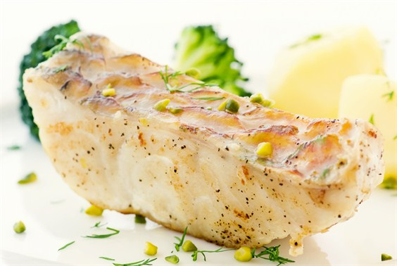

Karmelowa ryba zapiekana z brokułami

Składniki:
| L.p. |
Produkt |
Ilość |
| 1 |
ryba morska(biała) |
7/10 Kilograma |
| 2 |
brokuły |
1 Sztuka |
| 3 |
por |
1 Sztuka |
| 4 |
koperek |
1 Sztuka |
| 5 |
cukier |
1/2 Szklanki |
| 6 |
oliwa |
2 Łyżki |
Sposób przygotowania:
- Pora pociąć grubo, podsmażyć na oliwie i wyłożyć do żaroodpornego naczynia.
- Położyć na nim pokrojoną w cząstki surową rybę i posypać grubo zmielonym pieprzem.
- Z cukru zrobić na patelni karmel i wylać na rybę.
- Różyczki brokułu lekko podsmażyć na odrobinie oliwy i również wyłożyć na rybę.
- Piec w piekarniku w temperaturze 180°C około 50 minut.
- Danie polać Sosem koperkowym Tarsmak.
- Potrawy nie solimy!